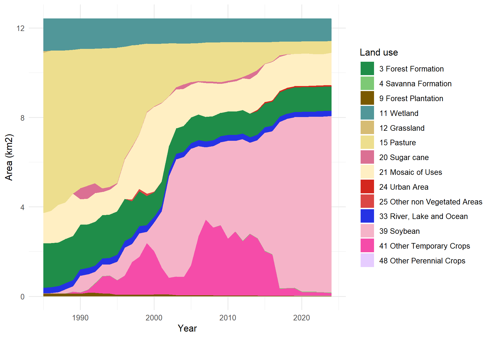
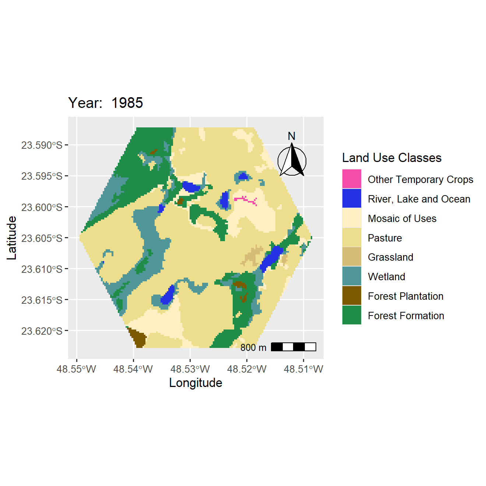
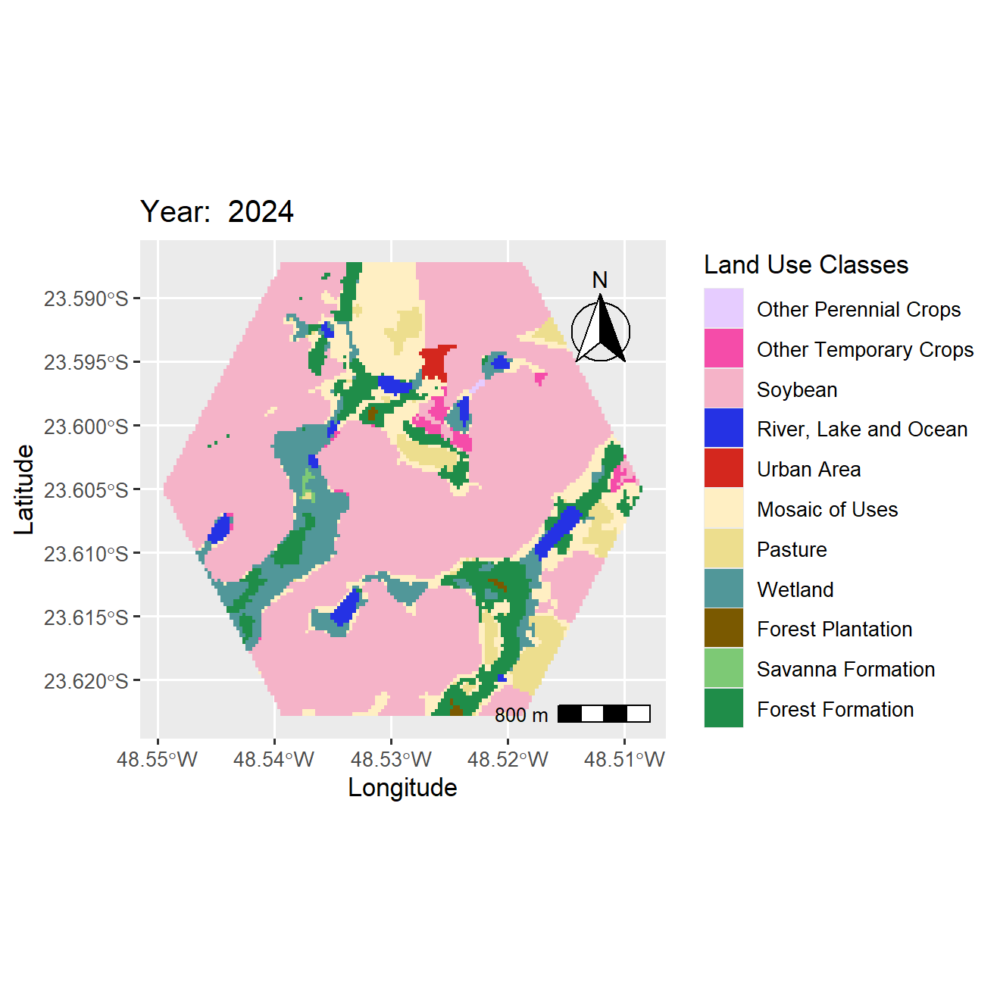

Capítulo 5 Dados, áreas e mapas
Nesta parte, todas as análises do pacote são aplicadas, uma após a outra, a um hexágono de 12,5 km² centrado no campus Lagoa do Sino da UFSCar, em Buri (SP), com os mapas anuais da Coleção 10 do MapBiomas de 1985 a 2024. O objeto de mapas vem com o pacote:
load(system.file("examples", "mapa_exemplo.Rdata", package = "biomastats"))Áreas por classe
get_area() mede a área de cada classe em cada ano, levando em conta a área
real de cada pixel, e devolve tanto a tabela (aggregate_data) quanto o gráfico
da série:
areas <- get_area(mapas, plot_type = "areaplot")
areas$time_series
Em quatro décadas, a paisagem trocou de base produtiva. Em 1985, a pastagem ocupava 7,2 km², 58% da área; em 2024, restavam 0,5 km². No mesmo período, a soja, que não aparecia em 1985, chegou a 7,9 km² e passou a dominar a paisagem. A formação florestal encolheu de 200 ha para 107 ha, uma perda de 47%.
Mapas
Com land_vis(), essa transformação fica visível no mapa de cada ano, com a
legenda e as cores oficiais do MapBiomas:


Composição em um ano
Para resumir a composição de um único ano, land_dist() desenha um gráfico de
colunas (type = "barplot") ou de setores (type = "pie"):
land_dist(areas, year = 2024, type = "barplot")